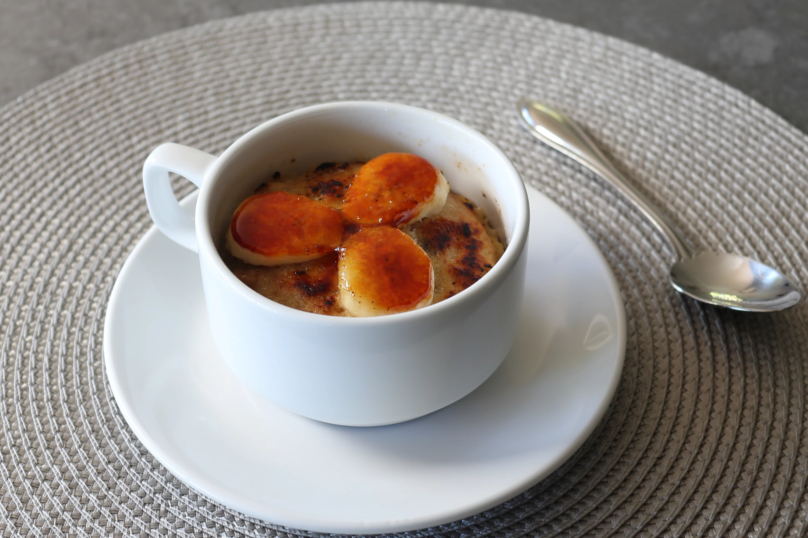

Banana Bread Mug Cake in a Minute

Description
If you like banana bread, cakes that take only about a minute to cook, and things that sound too good to be true, you're really going to enjoy this! Garnish with sliced banana, a dusting of cocoa, or shaved chocolate if you prefer.
Ingredients
- 1 medium very ripe banana
- 2 tablespoons packed brown sugar
- 1 tablespoon white sugar
- ¼ teaspoon salt
- ¼ teaspoon baking powder
- ⅛ teaspoon baking soda
- 3 tablespoons melted unsalted butter
- 1 tablespoon milk
- ⅛ teaspoon vanilla extract
- ½ cup all-purpose flour
- ¼ cup chopped walnuts
- 2 tablespoons dark chocolate chips
- 6 slices banana
- 1 tablespoon white sugar, or to taste
Directions
- Combine ripe banana, brown sugar, white sugar, salt, baking powder, baking soda, melted butter, milk, and vanilla in a mixing bowl; use a potato masher to mash the mixture into a smooth puree. Add flour and mix until just combined. Stir in walnuts and chocolate chips until evenly mixed.
- Transfer batter evenly into two lightly buttered coffee mugs or cups. Tap a few times on a towel to settle everything down and ensure there are no air pockets.
- Bake in the center of the preheated oven until well browned and extra crispy, 40 to 45 minutes. Please note, this will be about 10 to 15 minutes longer than the package directions.
- Microwave cups, one at a time, until a toothpick comes out clean, about 1 minute.
- Let cool before serving.
- Optional: Garnish each with banana slices and dust with sugar. Brulee the tops with a blowtorch.